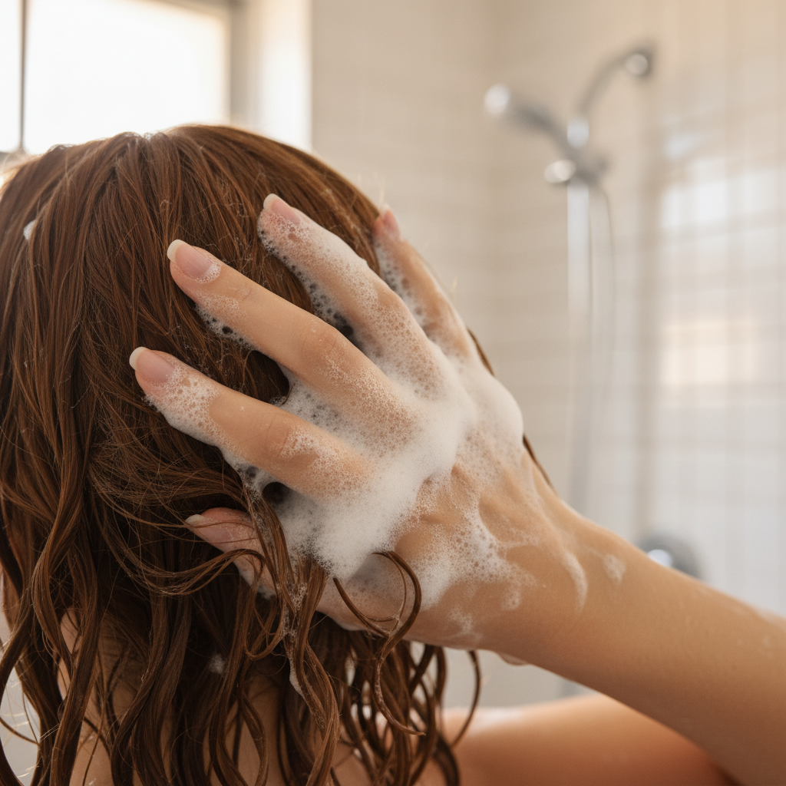
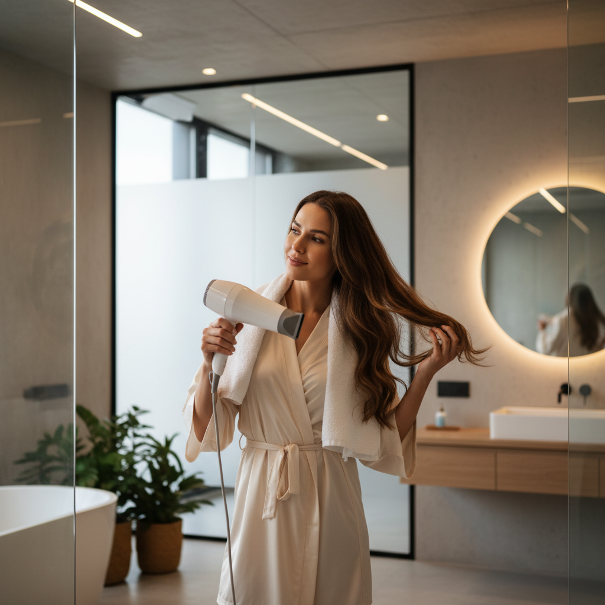
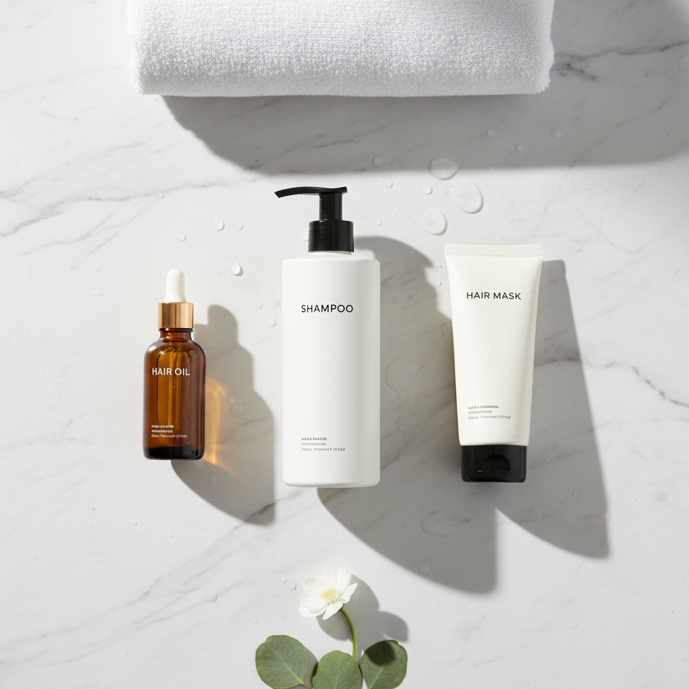

美容室でトリートメントした日の夜、髪を触ったときのあのツルツル感。なのに3日後にはパサつきが戻り、1週間も経てばほぼ施術前と同じ手触りに戻っている。お金と時間をかけたのに、と悔しくなった経験がある人は多いはずです。
実はこれ、トリートメントの品質だけが原因ではありません。日々のケアの中に、せっかく入れた栄養を自分で洗い流してしまう習慣が隠れています。この記事では、サロントリートメントが早く落ちる原因と、自宅でできる持続ケアについて書いていきます。
サロントリートメントが落ちる仕組み

美容室のトリートメントは、髪の内部に栄養成分を入れ込み、表面をコーティングして閉じ込める構造になっています。ただ、このコーティングは永久にもつものではありません。毎日のシャンプー、ドライヤーの熱、紫外線、枕との摩擦。こうした外的な刺激にさらされるたびに、表面のコーティングが少しずつ剥がれ、中に入れた栄養も一緒に抜けていきます。
つまり、施術の瞬間がピークで、そこから緩やかに下降していくのがトリートメントの宿命です。持続期間は髪の状態にもよりますが、おおよそ1週間から長くて1か月。ダメージが大きい髪ほど、栄養の受け皿であるキューティクルが荒れているため、抜けるスピードも速くなります。
トリートメントがすぐ落ちる5つの原因
なぜ人によって持ちが違うのか。以下の5つに心当たりがないか、チェックしてみてください。
- 洗浄力の強いシャンプーを使っている
- ドライヤーを近距離で長時間あてている
- 髪が濡れたまま寝ている
- タオルでゴシゴシ拭いている
- アイロンやコテを毎日高温で使っている
このうち最もダメージが大きいのが、1つ目のシャンプーです。毎日使うものだからこそ影響が累積します。高級アルコール系と呼ばれる硫酸系の洗浄成分は泡立ちが良い反面、トリートメントで入れた栄養成分まで一緒に洗い流してしまいます。シャンプーの成分表の見方を知っておくと、自分のシャンプーがどのタイプか判断できるので、一度確認してみてください。
シャンプーの選び方でトリートメントの持ちが変わる

サロントリートメントの持続力を左右する最大の要因は、実は毎日のシャンプーです。美容室で3,000円から5,000円のトリートメントをしても、家に帰って洗浄力の強いシャンプーで洗えば、せっかくの栄養は数日で流れ出てしまいます。
選ぶべきはアミノ酸系洗浄成分を使ったシャンプーです。アミノ酸系は髪と同じ弱酸性で洗えるため、キューティクルを無理に開かず、中に入っているトリートメント成分を保ちやすい。泡立ちは硫酸系より穏やかですが、頭皮の汚れはしっかり落とせます。
さらに踏み込むなら、ペリセアのように髪内部に浸透する補修成分が入ったシャンプーを選ぶと、洗いながら補修もできるので、トリートメントの効果が底上げされます。ペリセアは約1分で毛髪内部に届く即効性があり、毎日のシャンプーのたびに補修が積み重なっていきます。
ドライヤーと日常習慣の見直しポイント

シャンプー以外にも、日常の中で改善できるポイントがあります。
ドライヤーは髪から20cm以上離して、根元から乾かすのが基本です。毛先は最後に余熱で乾かすくらいの感覚でちょうどいい。近距離で熱をあて続けると、キューティクルが開いたままになり、中の栄養が抜ける原因になります。エルカラクトンのように熱に反応して髪を補修する成分が入ったアウトバストリートメントを使えば、ドライヤーの熱をむしろ味方にできます。
タオルドライも見直しどころです。ゴシゴシこすらず、タオルで髪を挟んでポンポンと水気を取る。濡れた髪はキューティクルが開いていて摩擦に弱いので、ここで雑に扱うと一気に傷みます。
就寝時の摩擦対策も意外と見落とされがちです。シルクやサテンの枕カバーに替えるだけで、寝ている間の髪への負担がかなり減ります。
週1回の集中ケアという発想
サロンに月1回通うのが理想とはいえ、時間もお金も限りがあります。そこで取り入れたいのが、自宅での週1回の集中ケアです。
美容液泡パックという使い方を聞いたことがあるでしょうか。シャンプーの泡を髪全体に行き渡らせたまま、2分から3分ほど置いてから流す方法です。泡の中に含まれるペリセアやヒアルロン酸、高濃度コラーゲンといった補修成分が髪の内側に浸透する時間を確保できるため、通常のシャンプーとは仕上がりが変わります。週に1回か2回、いつものシャンプーの時間にほんの数分足すだけなので、新しい習慣として取り入れやすい。
サロントリートメントを月1回受けつつ、その間を自宅ケアでつなぐ。この組み合わせができると、あの施術直後のツヤと手触りをかなりの期間キープできるようになります。サロンに行く頻度を減らせるぶん、長い目で見ればコストも抑えられます。
毎日のシャンプーでトリートメントの栄養を守り、週1回の集中ケアで補修を重ねる。サロン帰りの髪を自宅でも維持したいなら、まずは毎日使うシャンプーの洗浄成分を見直すところから始めてみてください。